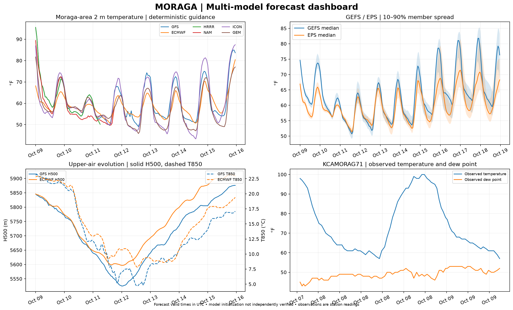
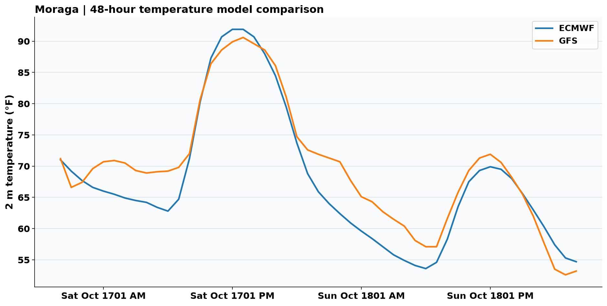

Multi-model forecast dashboard • four panels
Deterministic temperature guidance, GEFS/EPS ensemble spread, upper-air evolution, and actual KCAMORAG71 observations. Model requests use the precise station coordinates; individual models may return different grid locations. HRRR data remains excluded pending verification.

96-hour Bay-to-Valley marine intrusion tracker
Four-day temperature and dew-point forecasts for San Francisco, Oakland, Moraga, Concord and Sacramento. Model estimates, not live station readings.
 Model forecast
Model forecast
48-hour Moraga temperature model comparison
ECMWF and GFS hourly forecasts. KCAMORAG71 observation overlay is pending data integration.

Awaiting first successful model chart run.')">Forecast only
SFO–Sacramento pressure gradient
48 hours of model history plus a 48-hour model forecast. Positive values indicate relatively higher coastal pressure.

Coastal boundary-layer height
Model boundary-layer height proxy, not measured marine inversion depth. Moraga elevation reference: ~650 feet.